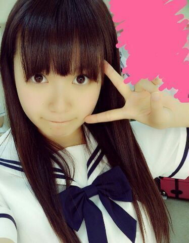
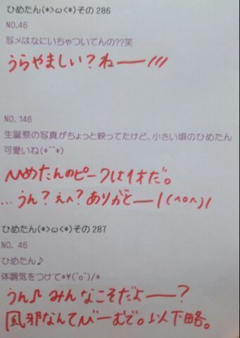

| 2013/07 14 Sun | ひめたん(*>ω<*)そ の314 |

たぶんプリンシパルの時期。
今度こそおわーたーよー
世界史返ってきたら、
きちんと報告するからね
楽しみにしててね( ^ω^ )げろげろげろー
夏！
あのねー夏サンダル買ったのー
あのねっだからねっそのねっ
また個握ん時にみせるねー
だからね、覚えててね！
そしてブログにも貼るねーいつかね
思い出した頃に貼るね！
でもね買ってすぐにはいて歩き回ってたら
脚が。いやこれ以上言わんでおくね
うふーちゃんと濁せてるかな(´・ω・｀)
みなさーんは最近
なんか服買ったよーとかありますかー？
この夏は
↑ここまで書いて昨日寝てたんだけど
え(´・ω・｀)何(´・ω・｀)(´・ω・｀)
まーいーやー
とりあ今日は学校もお仕事もなく
なんにもありませんでしたー
なのでプールに行って
紫のおばあさんと仲良くなりましたー
お昼寝してたら雷の音で起きましたー
明日はお仕事がんばるぞ(｀・ω・´)
そろそろ朝日新聞 ひめたんの番よ
チェックよろしくねー♪
たぶんプリンシパルの時期。
今度こそおわーたーよー
世界史返ってきたら、
きちんと報告するからね
楽しみにしててね( ^ω^ )げろげろげろー
夏！
あのねー夏サンダル買ったのー
あのねっだからねっそのねっ
また個握ん時にみせるねー
だからね、覚えててね！
そしてブログにも貼るねーいつかね
思い出した頃に貼るね！
でもね買ってすぐにはいて歩き回ってたら
脚が。いやこれ以上言わんでおくね
うふーちゃんと濁せてるかな(´・ω・｀)
みなさーんは最近
なんか服買ったよーとかありますかー？
この夏は
↑ここまで書いて昨日寝てたんだけど
え(´・ω・｀)何(´・ω・｀)(´・ω・｀)
まーいーやー
とりあ今日は学校もお仕事もなく
なんにもありませんでしたー
なのでプールに行って
紫のおばあさんと仲良くなりましたー
お昼寝してたら雷の音で起きましたー
明日はお仕事がんばるぞ(｀・ω・´)
そろそろ朝日新聞 ひめたんの番よ
チェックよろしくねー♪

 メンバーみんなで
メンバーみんなで
いろいろしてるじゃないですか？
その中で一番大変だったのと、
一番楽しかったのってなんですか？？( ´∀｀)
今回のプリンシパルは
ちょっと心理戦みたいなとこあって
なんか辛かったかな(´・ω・｀)
遠征するとき一緒にホテルでお泊まりするのは
もういつも楽しい。
ペアもね行ってから発表されるから
いつもどきどきよー
まだ一緒にお泊まりしたことない子もいつか！
そうだ制覇しよう！
オススメの本教えて！
「五体不満足」
物語はなんだろう。自伝が好き。
全国握手会（幕張）ひめたんレーン
並んでもいいですか？？
あと、どんなことしたら覚えてくれる？？？
待ってる！待ってる待ってるよー♪
どんな...ことかなー
ちょっと服装とかに特徴があったら
もしかしたら覚えちゃうのかなー
ぴんく着てくれたら嬉しーよー(〃ω〃)
 全握で初ひめたんに行くべきか、
全握で初ひめたんに行くべきか、
個握で初ひめたんに行くべきか、
どちらがお好みですか？
ライブも見たければ全握
ゆっくりお話したければ個握
お任せしますよ( ^ω^ )ありがとー！
ひめたんビームをくらった時の叫び方で
正しい叫び方はどんなのですか？
正しい...なんだろね
正解はないんだけどね、でも
しーん、ってなるのはひめたんがちょっと
あってなるのでねー
何かしらアクションがあったら嬉しいでーす
この前まいまいにひめたんびーむが
直撃したみたいですが、
直撃するとどおなるのですか？
まいまいは「はー///」ってなってたような
そんな記憶がうっすらあります
個人差はあるかもしれない。
まいまいとの写メ
すっごい穏やかな雰囲気に包まれている
気がするのは...なぜ(゜Д゜;)？
それは受けてくれた相手が
まいまいだからでーす(゜Д゜;)
カフェラテとカフェモカの違いが
分かりません。何が違うと思う？
ひめたんにも飲めるのがカフェラテ
ごめんなさいこれしかわからん(´-ω-`)
すっぴんでいってるメンバー多いの？
うーんメイクしてる子のが多いかな♪
秋田組おかえりなさいー☆
えってかね
前回のブログの服のね
りぼんがやる気ないの。へにゃって。

シャレじゃない、先にゆっとくね。
お中元きた！
(＊´・ω・＊)
コメント(228)
2013/07/14 23:54